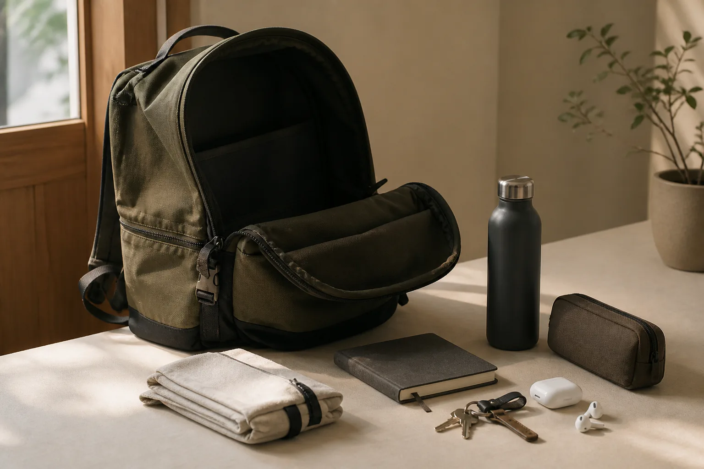

백팩이 자꾸 무거워진다면? 매일 짐을 줄이는 수납 루틴

백팩은 하루에 한두 개씩 들어온 물건이 빠져나가지 않으면서 어느새 무거워집니다. 어제 받은 전단, 다 쓴 충전 케이블, 혹시 몰라 넣어 둔 소지품이 여러 칸에 흩어지기 때문입니다. 새 수납용품을 사기 전에 가방을 비우고 오늘 필요한 것만 다시 담는 짧은 루틴부터 만들어 보세요.
1단계: 모든 칸을 열고 한 번에 꺼내세요
큰 수납칸만 정리하면 옆주머니와 안쪽 지퍼 포켓에 남은 물건을 놓치기 쉽습니다. 깨끗한 바닥이나 테이블 위에 가방 속 물건을 전부 꺼낸 뒤, 가방을 가볍게 털어 먼지와 부스러기도 확인합니다. 관리 방법은 소재마다 다르므로 세탁이나 세정제를 쓰기 전에는 반드시 제품 안내를 먼저 확인하세요.
2단계: 오늘, 가끔, 집에 둘 것으로 나누세요
꺼낸 물건을 세 묶음으로 나누면 판단이 단순해집니다. 오늘 일정에 반드시 필요한 물건은 다시 담고, 비상용처럼 가끔 필요한 물건은 정말 가방에 상시 둘 필요가 있는지 살펴봅니다. 영수증, 빈 포장, 사용하지 않는 샘플처럼 집에 둘 이유도 없는 물건은 바로 정리합니다.
- 오늘: 지갑, 열쇠, 업무나 수업에 필요한 물건
- 가끔: 우산, 상비용품, 여분 케이블처럼 일정에 따라 고를 물건
- 집에 둘 것: 중복된 문구류, 지난 일정의 서류, 오래된 영수증
3단계: 꺼내는 빈도와 무게를 함께 보세요
지갑과 교통카드처럼 자주 쓰는 물건은 손이 쉽게 닿는 정해진 포켓에 둡니다. 노트북이나 책처럼 비교적 무겁고 넓은 물건은 가방 안에서 움직이지 않도록 등 쪽에 가까운 수납부에 두는 편이 정리하기 쉽습니다. 단, 제품마다 칸의 형태와 권장 사용법이 다르므로 억지로 밀어 넣지 마세요.
작은 물건은 목적별 파우치 두세 개로 묶어 보세요. 충전기와 이어폰은 전자기기 파우치, 밴드와 티슈는 위생용품 파우치처럼 이름을 붙이면 가방을 바꿀 때도 묶음째 옮길 수 있습니다.
4단계: 귀가 후 3분 점검을 반복하세요
매일 완벽하게 정리할 필요는 없습니다. 집에 돌아오면 물병과 음식물을 먼저 꺼내고, 버릴 것과 다음 날 쓰지 않을 물건만 덜어내세요. 주말에는 모든 칸을 다시 비워 다음 주 일정에 맞게 구성합니다. 이 순서가 익숙해지면 가방의 크기보다 자신의 실제 짐을 먼저 보게 됩니다.
매일 확인하는 백팩 정리 체크리스트
- 물병과 음식물처럼 바로 꺼낼 것을 비웠나요?
- 지난 일정의 종이와 영수증을 정리했나요?
- 내일 쓰지 않는 전자기기와 케이블을 뺐나요?
- 자주 쓰는 물건이 항상 같은 자리에 있나요?
- 지퍼가 무리 없이 닫히고 물건이 한쪽에 몰리지 않나요?
좋은 백팩을 고르는 기준도 매일 들고 다니는 물건에서 시작합니다. 지금 쓰는 가방이 실제 생활에 맞지 않는다면 Himawari 제품 목록에서 수납 구성과 크기를 비교해 보세요.
참고·안내
자주 묻는 질문
백팩은 얼마나 자주 정리하면 좋나요?
매일 귀가 후 영수증과 빈 포장처럼 바로 버릴 것을 꺼내고, 일주일에 한 번 모든 칸을 비워 점검하면 관리하기 쉽습니다.
작은 파우치를 많이 쓰면 더 편한가요?
종류가 너무 많으면 찾는 시간이 늘 수 있습니다. 전자기기, 위생용품처럼 목적이 분명한 두세 묶음부터 시작해 보세요.
가방 안에서 무거운 물건은 어디에 두나요?
가방 형태가 허용한다면 비교적 무거운 물건을 등 쪽에 가깝고 흔들리지 않는 자리에 두는 편이 안정적으로 정리하기 쉽습니다.